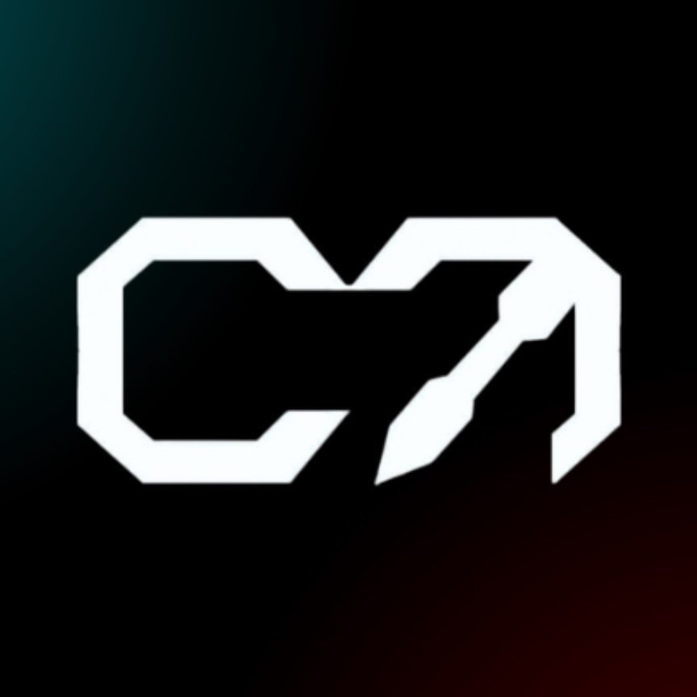

Team Centinels
Team CENTINELS is SRM Institute of Science and Technology’s premier cybersecurity club, dedicated to building a strong community of cybersecurity enthusiasts. We focus on exploring cutting-edge techniques in cyber threats , ethical hacking, and penetration testing. Our activities include hands-on workshops, Capture The Flag (CTF) challenges, and collaborative projects like SRMRoadmap, a navigation tool that helps you find your way in Srm and Cyberhub, designed to foster innovation and enhance skills in tackling real-world cyber threats.
Team Domains are:
- Corporate
- Creatives
- Web Development
- Software Geeks
- CyberSquad